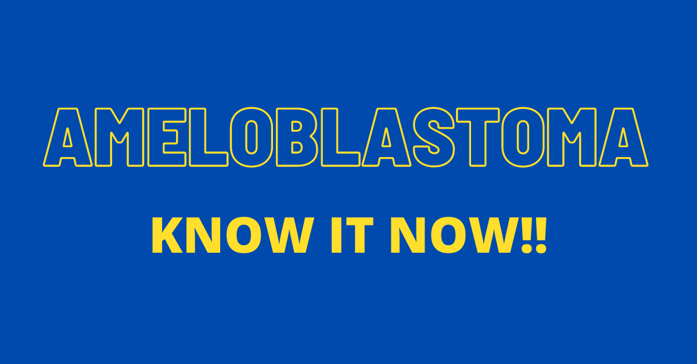
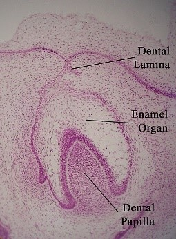
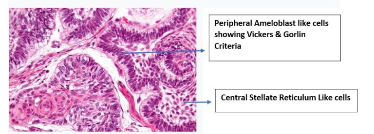
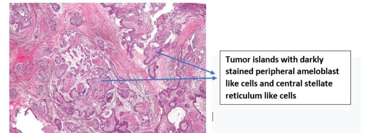
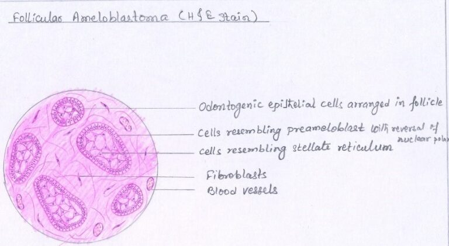
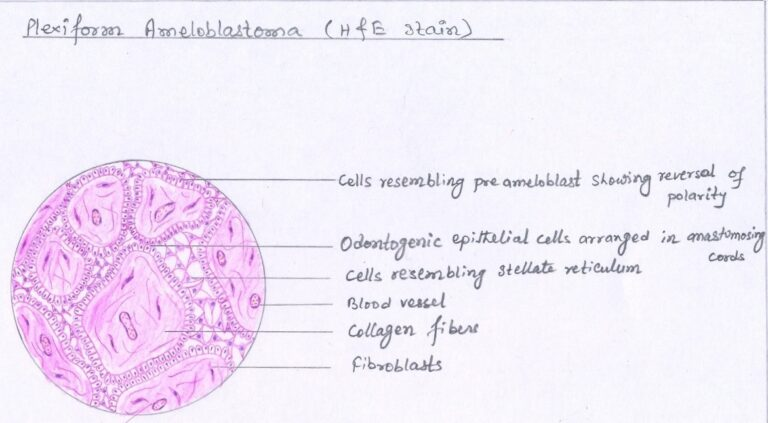
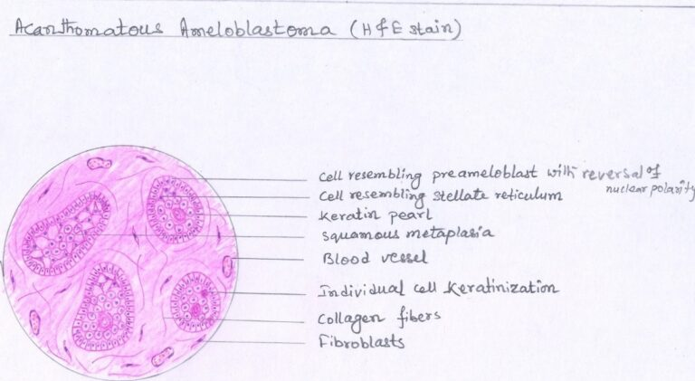
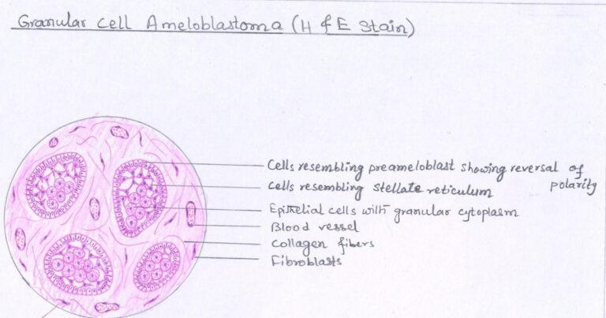

Ameloblastoma – Dental Notes
- It is an odontogenic tumor Odonto means tooth Genic means to form
- Thus, a tumor arising from tooth forming tissue
- It is the second most common odontogenic neoplasm, and only odontoma outnumbers it
Definition
ROBINSON defined Ameloblastoma as “Tumor that is unicentic, nonfunctional, intermittent in growth, anatomically benign and clinically persistent.”
MNEMONIC to remember definition – UNIAC
- U – unicentic
- N – nonfunctional
- I – intermittent in growth
- A – anatomically benign
- C- clinically persistent
It is a true neoplasm of enamel organ type tissue, which does not undergo differentiation to the point of enamel formation
REMEMBER TWO TERMS
- Adamantinoma (Other Name) – Was given by Malassez in 1885. This term not preferably used as Adamantinoma means to form hard tissue, and no hard tissue is formed.
- Thus, the term Ameloblastoma introduced by Churchill in 1934
Pathogenesis
- The stimulus initiating the process is unknow.
- Although most
authorities believe it can be derived from:
- 1. Remnants Of Enamel Organ – Remnants Of Dental Lamina or Remnants of Hertwig’s epithelial root sheath (epithelial rests of Malassez)
- 2. Epithelium of odontogenic cysts (particularly Dentigerous cyst) & Odontoma
- 3. Disturbances of enamel organ
- 4. Basal cells of surface epithelium of jaws
- 5. Heterotopic epithelium in other parts of the body especially pituitary gland
- Presently thought to be most likely result of alteration/mutation in genetic material of cells that are embryologically pre-programmed for tooth development

Clinical Features:-
- AGE – Average Age 33-39 years, most cases between 20-60 years
- SEX PREDILECTION – 1:1 (Equal sex predilection)
- SITE – Mandible (More than 80% cases) Molar angle ramus (3 times more than premolar & anterior region)
- 2nd most common odontogenic tumor
- Benign
- Slow growing
- Locally invasive
Based On Clinical & Radiographic Features It Is Classified As
- Conventional solid or multicystic (about 75% to 86% of all cases)
- Unicystic (about 13% to 21% of all cases)
- Peripheral (extraosseous) (about 1% to 4% of all cases)
Radiographic Features
- Classically – Multilocular cyst-like lesion of jaw. Compartmental appearance with septa of bone extending into radiolucent tumor mass (honeycomb or soap bubble appearance)
- Sometimes unilocular
- Periphery smooth
- In advanced lesion – jaw expansion – thinning of cortical plate
Ameloblastoma Basics Video Lecture – https://youtu.be/fJYesDgxQSQ
Histopathology Ameloblastoma – 6 Patterns:-
- Follicular (most common)
- Plexiform (2nd most common)
- Acanthomatous
- Granular cell
- Basal cell
- Desmoplastic
FAMOUS PEOPLE ARE GREAT BELLY DANCERS:-
- FAMOUS - Follicular (most common)
- PEOPLE - Plexiform (2nd most common)
- ARE - Acanthomatous
- GREAT - Granular cell
- BELLY - Basal cell
- DANCERS - Desmoplastic
Tumor has two components :-
- Epithelial component - disconnected islands, strands & cords in stroma
- Stromal Component – Moderately to densely collagenized
Let’s Now See The 6 Histopathologic Patterns/subtypes: –
- Most tumours show more than one type of histopathologic patterns. Lesions are subclassified based on predominant pattern present. According to a study by Reichart et al 1995, these histologic subtypes may have prognostic implications for recurrence.
| Histopathologic Subtype | Recurrence Rate |
| Follicular | Highest |
| Plexiform | Intermediate |
| Acanthomatous | Lowest |
1. Follicular Ameloblastoma –
- Most common & recognizable subtype
- Epithelial component in the form of small discrete tumor islands present in stromal tissue.
-
These epithelial tumor
islands will show 2 parts: –
- 1. CENTRAL MASS OF CELLS – STELLATE RETICULUM LIKE CELLS (angular to polyhedral in shape)
- 2. PERIPHERAL LAYER OF CELLS – AMELOBLAST LIKE CELLS
- These peripheral layer of cells (ameloblast like cells) under high magnification show certain characteristics described by Vickers & Gorlin
- These peripheral layer of cells (ameloblast like cells) under high magnification show certain characteristics described by Vickers & Gorlin
-
Vickers & Gorlin
Criteria (1970) (Important)
- 1. Tall columnar cell
- 2. Hyperchromatic nucleus (stain more intensely than normal)
- 3. Palisaded nuclei
- 4. Reverse polarity of the nuclei (nuclei of the cells located at the opposite pole to the basement membrane)
- 5. Sub-nuclear vacuole formation
- Sometimes cystic degeneration seen within epithelial islands of follicular ameloblastoma.

Follicular Ameloblastoma (Low Magnification)

Follicular Ameloblastoma High Magnification

2. Plexiform Meloblastoma –
- 2nd most common
- Word plexiform means network or plexus
-
Thus, plexiform
ameloblastoma shows epithelial component in form of a network or plexus;
there is a network of inter anastomosing strands. Each of these strands is
bounded by:-
- Peripheral layer of cells are cuboidal to columnar, and will not strictly follow Vickers & Gorlin Criteria.
- Central mass of cells are stellate reticulum-like (angular to polyhedral in shape). These stellate reticulum-like cells are not as prominent as seen in follicular type.
- Areas of cystic degeneration may be seen in stroma and not within epithelial component.

3. Acanthomatous Ameloblastoma –
- Squamous metaplasia, often associated with keratin formation, occurs in the central portions of the epithelial islands of a follicular ameloblastoma, the term Acanthomatous ameloblastoma is used.

4. Granular Cell Ameloblastoma –
- In this type, cytoplasm becomes coarse granular eosinophilic appearance (usually of stellate reticulum-like cells, often extends to include peripheral cuboidal or columnar cells)
- Granules represent lysosomal aggregates ultra-structurally

5. Basal Cell Ameloblastoma –
- Resembles basal cell carcinoma of skin
- Rarest type
- Least common
- Epithelial tumour cells are more primitive, less columnar, arranged in sheets
6. Desmoplastic Ameloblastoma –
- Dense collagenous stroma
- Thin cords of epithelium
- Epithelium compressed & fragmented by dense stroma
- Central cells scant
- Peripheral cells are flattened or cuboidal rather than tall columnar
- Most desmoplastic ameloblastomas display occasional classic islands of follicular ameloblastoma among the predominant strands and cords. Without these classic islands of ameloblastoma, the diagnosis can be difficult.
Treatment & Prognosis –
- Complete surgical removal & Long term follow up due to high recurrence rate
- Most preferred Surgical excision (radical over conventional)
- The growth pattern of the neoplasm, categorized as conventional or unicystic, is more important than the histopathologic subtype in treatment decision
References –
- Shafer’s Textbook Of Oral Pathology
- Neville – Oral & Maxillofacial Pathology
- Image – Wikipedia & Wikimedia Commons